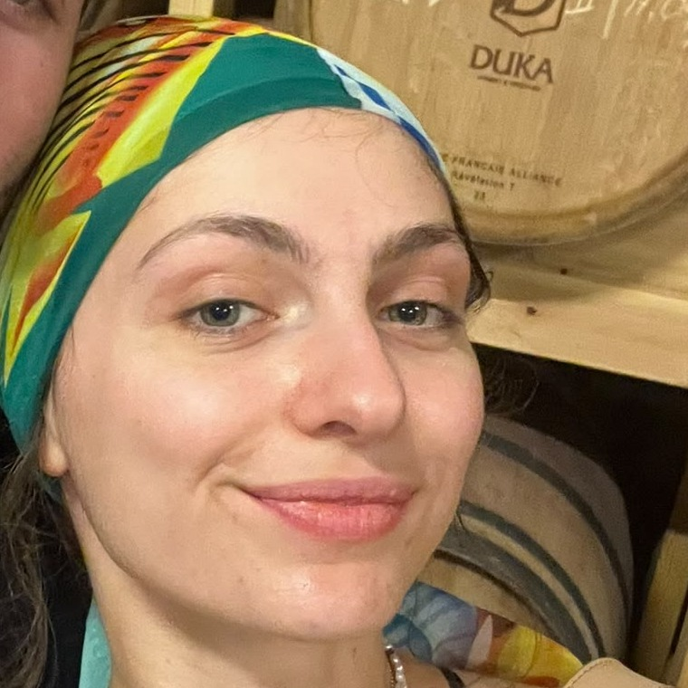

עופר ראש צוות (רצ) בביטחון נתב״ג, אלית מאפיינת. בעבודה ההיררכיה ברורה. בבית — לא בטוח. שום החלטה לא עוברת בלי בדיקה: לא איזו מסעדה, לא איזו תמונה לשלוח, ולא אם מותר לעשות ספונג'ה בשעה הזאת.
הפרופילים

אלית
"המאפיינת שמתרגשת מנשק יותר משהיא מתרגשת מפרחים"שכתבה "אני עייפה"
אלית מנגנת בפסנתר 17 שנה, אוהבת "באמת הכל" במוזיקה, ועברה תוך חודש מקלאסי דרך אביתר בנאי ללטיני — נשמע כמו נשמה רגישה ומורכבת. ואז היא רואה תמונה של עופר אוחז ברובה ומאבדת שליטה לגמרי:
כמאפיינת היא עוברת תשאול נוסעים כל יום, ושואפת להתקדם רשמית לתפקיד חוקרת:
בבית היא לא מחכה לתפקיד הרשמי, היא פשוט מתחילה לתשאל. אותם עקרונות הם לא דבר להתעסק איתו בקלות ראש. כשאלכס קרא לה "פיק מי", היא לא שכחה את זה ימים — וגם לא הניחה לעופר עד שהבטיח לה רשמית שהיא לא אחת מהן.
על תחביב שלא היה בתוכנית של אף אחד
עופר
"הבריטי המזויף שאי אפשר לפספס ממרחק"שכתב "את יפה"
עופר נולד בקריית אונו, ובגיל 3 עבר עם המשפחה ללונדון לתשע שנים, כי אמא עשתה שם תואר שני ודוקטורט ואבא הוא בריטי מקור. תשע השנים האלה לא השפיעו על המבטא שלו, אבל הן נטעו בו הליכה שאלית — המאפיינת המקצועית — מזהה ממרחק, עוד לפני שהיא רואה את הפנים שלו:
היא מזהה אותו לפי ההליכה, אבל לא מצליחה לסלוח לו על השעון. כשהוא הגיע מאוחר ואלית כבר מוכנה ומחכה, היא לא חיפשה דרך עדינה לומר את זה:
תשע שנים בלונדון, ועדיין לא הביא משם דייקנות אחת. אבל יש דבר אחד שהוא בכל זאת לא מצניע, לא מאחר איתו, ולא משאיר למקרה — הוא פשוט חוזר עליו שוב ושוב, בלי שום נימוס בריטי:
153 פעמים בצ׳אט — המילים היחידות שהבריטי שבו לא טרח להצניע
מי באמת מפקח על מי
בעבודה זה רשמי: עופר רצ, אלית מאפיינת תחתיו. גם אלית עצמה מגדירה את זה כך:
בבית הסדר הזה מתהפך. אלית היא זו שמצליבה משמרות, תאריכים ועדים כדי לשחזר בדיוק מתי עופר התחיל להתעניין בה:
ועופר, שבעבודה מחזיק בסמכות הרשמית, מקבל בבית את התפקיד השני — מה שאלית עצמה מציינת בציניות כשהוא מאשר לה משהו:
המילון הפרטי שלכם
פישוטו / שושי
הכלב. פישוטו זה השם הרשמי, ו"שושי" זה כינוי החיבה שאלית עצמה המציאה לו — ומשתמשת בו בכל הזדמנות.
גברת חותמת מקטאר
הכינוי שעופר הדביק לאלית אחרי שהיא שלחה לו את לוח המשמרות שלה בפורמט רשמי-להפליא.
תפוח אדמה
האבחנה העצמית של אלית בכל פעם שהיא חמה, מזיעה, או מצולמת בלי אזהרה מוקדמת.
אחת לאחת
הקריאה המשותפת שלהם כשמתגלה צירוף מקרים — נאמרת פעם אחת, ואז שוב, בכוונה, בכתיב מקולקל.
צימוק
זה התחיל כעקיצה: אלית צפתה בסרטון ישן שלו וקבעה שהוא היה נמוך וקטן — כמו צימוק. הוא לא הכחיש.
מאז זה לא עזב. תוך כמה חודשים זה הפך מעקיצה לכינוי החיבה הקבוע שלהם, ששניהם משתמשים בו כל הזמן — בבוקר, בלילה, ובכל הודעת "אני אוהב/ת אותך":
אלית גם המציאה לזה ספין-אוף: פלייליסט בשם "קרקר עם צימוקים"
פרסי האקדמיה של הזוג
לכלב יש שני שמות, שניהם מאלית. ואלית עצמה עוברת בין כמה כינויים לעופר באותה נשימה:
איכשהו גורם לזה שהוא נרדם בזמן שהמתין לה לצאת מהמקלחת להישמע כמו תאונה טרגית ולא תכונת אופי:
הספיקה לרכבת, ובמקום להודות שטעתה בחישוב הזמן, בחרה גרסה אחרת:
כי שקר נשמע פחות מביך מטעות
שכנעה את עופר שחצי פנסיון מספיק, נימקה את זה בעדות מהדר שהתפוצץ מאוכל, וסגרה את כל הדיון במשפט אחד:
באמצע ריב על מי מנקה, הביא לשולחן עירום משפחתי לא קשור:
כשאלית התלוננה שהוא רואה את נטע מהעבודה יותר ממנה, הוא לא הכחיש בנימוס — הוא מתח את המילה "רק" כאילו זה משפט משפטי:
ציר הזמן: הרגעים הגדולים
שעה לפני שהם יוצאים, עופר עדיין מתלבט אם המאמץ מספיק:
אלית עוצרת את התוכנית הזו באיבה:
התקציב הרשמי לדייט הראשון: אפס שקל על בגדים חדשים
ארבעה ימים אחרי הדייט, לפני ששניהם הודיעו על כך לנפש חיה, עופר מגלה שהמגזר כבר הקדים אותם:
אלית בודקת אם זה מטריד אותו. הוא בוחר בגרסה הכי פחות מתלהבת שאפשר לנסח לדבר ששמח אותו:
הם עדיין לא הודיעו לאף אחד. אף אחד לא היה צריך שיודיעו
הם מתחבקים ומתנשקים ליד המחסום בכניסה לבניין שלה — בלי לשים לב שלשכן הישן יש מצלמה מכוונת ישר לשם, ושהוא מדווח לאימא שלה על הכל:
עופר, שמודיע מי הסוטה האמיתי כאן:
הנשיקה הראשונה שלהם בחוץ תועדה בוידאו — לא על ידם
אחרי לילה רגיל של שיחה, עופר מודה שמשהו קצת לוחץ לו:
אלית שמה לב לאן זה הולך, ומחליטה לא להשאיר אותו תלוי:
עופר עונה תוך שניות, ובדרך שלו בלבד:
תגובת אלית מגיעה בפרץ אחד, בלי סדר פיסוקי ברור:
פחות מדקה אחר כך, היא כבר קופצת היישר לתכנון העתיד:
מהצהרת אהבה ראשונה להצעת נישואין — תוך פחות מדקה, בלי לקום מהמיטה
שבועיים אחרי ה"אני אוהב אותך", הם יושבים ומזמינים את הטיסות לטיול הראשון שלהם ביחד. עופר מנסה לחסוך:
אלית לא מקבלת את זה כתשובה סופית:
עופר מזכיר לה את משך הטיול. אלית לא מתרגשת:
החתונה כבר סגורה מהשבוע שעבר. המזוודות עדיין בדיון
בלי שום בקשה מצידו, אלית שולחת לעופר תוכנית סופ"ש מסודרת בתור הודעה אחת, ממוספרת:
1. אני באה לישון אצלך וקמה ב6 בבוקר ואתה מקפיץ אותי לרכבת
2. אתה בא לישון אצלי וקם ב8:30 איתי, מוציאים את פישוטו, אוכלים בוקר ואז אתה יוצא לבית שלך להשלים שיעורים
3. נפגשים בראשון בסינמה לראות את הסרט ואז כל אחד לביתו שלו
ומיד אחר כך, בלי שמישהו ביקש, גם הדירוג הרשמי:
עופר, שמבין בדיוק עם מי יש לו את הכבוד:
תכנון סופ"ש מסודר יותר מתוכנית טיסה, כולל ניתוח עלות-תועלת לכלב
ביקורת yelp על הזוגיות: עופר ואלית
עופר & אלית
4 מתוך 5 כוכבים. הגעתי בציפייה לזוגיות רגילה, עזבתי עם תיק מסודר על כל אי הבנה, כינוי לכל מצב רוח, וכלב עם שני שמות ותיעוד מסודר יותר משני בני האדם המארחים אותו.
שירות ומענה: מעולה, תגובה תוך דקה לכל הודעה, גם בעשר הודעות בודדות ברצף. ניקיון: נקודה רגישה — איום ספונג'ה אחד הצליח לעצור משק בית שלם. תקציב נופש: רמת מחקר שמתחרה בסוכן נסיעות מקצועי.
הורדנו כוכב על כך שגם בבית אף דבר לא עובר בלי בדיקה נגדית. מומלץ למי שאוהב שהאהבה שלו מגיעה עם תיק חקירה מסודר.